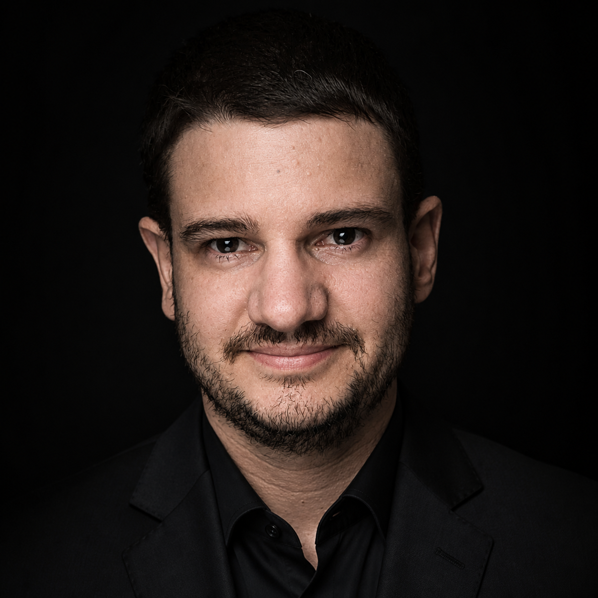

About Me

Throughout my career, I have cultivated a strong professional philosophy: I don't just build systems; I create the tools that empower teams to test, refine, and deploy them with confidence. Driven by an insatiable curiosity, I thrive in environments that challenge me to connect low-level electronics with high-level automation platforms.
Technical Journey & Expertise
With over 10 years of hands-on experience in product development and technical leadership, I have successfully driven projects from initial architectural design to mass deployment. Some of my most impactful contributions include:
- IoT & Smart Metering: I spearheaded the development of advanced firmware for smart meters utilizing ESP32 platforms. I engineered custom solutions for reliable data acquisition, low-power optimization, and secure cloud connectivity.
- Automotive QA Automation: To bridge the gap in complex test environments, I designed and built custom CAN bus automotive simulators. These tools effectively automated quality assurance pipelines, drastically reducing testing bottlenecks and human error.
- Industrial Control Systems: I have designed deterministic, low-level process controllers utilizing FPGAs, ensuring high-speed execution and precision control for critical industrial operations.
My Approach
I approach engineering with a holistic mindset. Whether writing clean C/C++ for microcontrollers, designing Python automation scripts, or configuring network protocols, my goal is always to deliver robust, scalable, and fully testable architectures. I highly value meticulous documentation, modular design, and continuous integration (CI) practices applied to hardware.
Contact Me
Want to collaborate or discuss a complex hardware-software challenge?